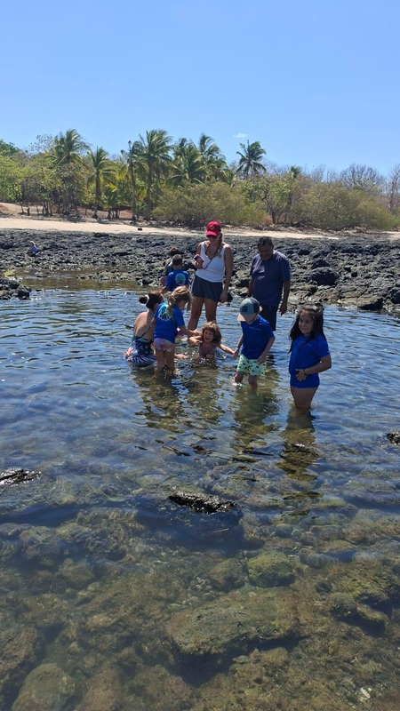
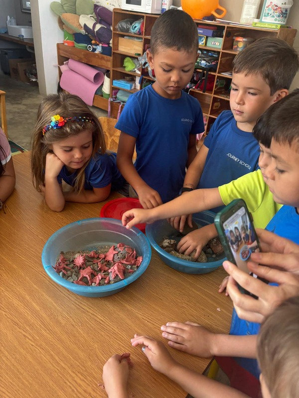
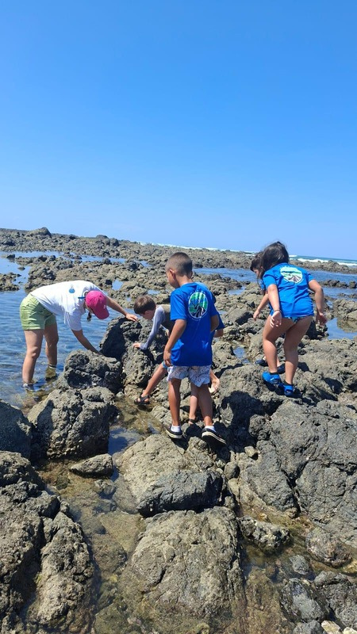

A marine biology program design, aligned with IB PYP and MEP standards and built around the internationally recognized Ocean Literacy framework (NOAA / NMEA).
The program combines hands-on in-school learning and excursions, using our coastline as a living classroom and connecting students directly with marine ecosystems through fieldwork and scientific inquiry.
Before I show you anything — how do you currently approach marine and environmental education? What's working? What feels missing?
Work together to ensure standards-aligned lessons that fit within the existing curriculum — IB PYP and MEP frameworks, anchored in Ocean Literacy.
An Ocean Literacy program in a school is a real differentiator for families — visible, distinctive, and scientifically credible.
Most students don't know there are careers related to the ocean — boat captain, researcher, and more. The program lets them picture themselves in different future careers.
Develop ocean literacy — understanding the ocean's influence on humans and human impact on the ocean.
Build scientific observation, data collection, and critical thinking skills.
Encourage environmental stewardship and responsible decision-making.
Connect classroom learning to real-world marine ecosystems.
Sensory exploration and storytelling. Introduction to marine life and habitats.
Understanding ecosystems and human impact. Introduction to data collection and scientific vocabulary.
Ecosystem dynamics and environmental challenges. Water-quality testing and citizen science.
Research-based learning and field investigations. Marine policy, conservation, and data analysis.

Build a rocky shore model. Scavenger hunts. Specimen observation. Plankton towing.
Tide pools at Avellanas / Negra. Sea turtle nesting. Mangrove and estuary exploration. Marine agriculture in the Gulf of Nicoya.

Water clarity. Beach debris counts. Plankton sampling. Microplastics analysis. Ecological survey and citizen science.
Worksheets, structured experiments, and class discussions throughout.
B.Sc. in Marine Sciences (with honors); graduate studies in environmental studies, focusing on marine protected area management.
Combines scientific expertise with hands-on teaching experience — engaging, curriculum-aligned marine science education tailored to school environments.
Which age band(s) would you prioritize for the pilot?
Which option fits Journey best — full year, or single project?
What shape works in your calendar — weekly · special days · camps · transversal?
Would you like a tailored proposal this week?
I want this built for Journey specifically — not a template.